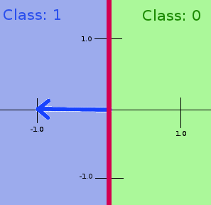

Why is weight vector orthogonal to decision plane in neural networks
I am beginner in neural networks. I am learning about perceptrons. My question is Why is weight vector perpendicular to decision boundary(Hyperplane)? I referred many books but all are mentioning that weight vector is perpendicular to decision boundary but none are saying why?
Can anyone give me an explanation or reference to a book?
Answer
The weights are simply the coefficients that define a separating plane. For the moment, forget about neurons and just consider the geometric definition of a plane in N dimensions:
w1*x1 + w2*x2 + ... + wN*xN - w0 = 0
You can also think of this as being a dot product:
w*x - w0 = 0
where w and x are both length-N vectors. This equation holds for all
points on the plane. Recall that we can multiply the above equation by a
constant and it still holds so we can define the constants such that the
vector w has unit length. Now, take out a piece of paper and draw your x-y
axes (x1 and x2 in the above equations). Next, draw a line (a plane in
2D) somewhere near the origin. w0 is simply the perpendicular distance
from the origin to the plane and w is the unit vector that points from the
origin along that perpendicular. If you now draw a vector from the origin to
any point on the plane, the dot product of that vector with the unit vector
w will always be equal to w0 so the equation above holds, right? This is
simply the geometric definition of a plane: a unit vector defining the
perpendicular to the plane (w) and the distance (w0) from the origin to
the plane.
Now our neuron is simply representing the same plane as described above but we
just describe the variables a little differently. We'll call the components of
x our "inputs", the components of w our "weights", and we'll call the
distance w0 a bias. That's all there is to it.
Getting a little beyond your actual question, we don't really care about
points on the plane. We really want to know which side of the plane a point
falls on. While w*x - w0 is exactly zero on the plane, it will have positive
values for points on one side of the plane and negative values for points on
the other side. That's where the neuron's activation function comes in but
that's beyond your actual question.
Suggest
Intuitively, in a binary problem the weight vector points in the direction of the '1'-class, while the '0'-class is found when pointing away from the weight vector. The decision boundary should thus be drawn perpendicular to the weight vector.
See the image for a simplified example: You have a neural network with only 1 input which thus has 1 weight. If the weight is -1 (the blue vector), then all negative inputs will become positive, so the whole negative spectrum will be assigned to the '1'-class, while the positive spectrum will be the '0'-class. The decision boundary in a 2-axis plane is thus a vertical line through the origin (the red line). Simply said it is the line perpendicular to the weight vector.
Lets go through this example with a few values. The output of the perceptron
is class 1 if the sum of all inputs * weights is larger than 0 (the default
threshold), otherwise if the output is smaller than the threshold of 0 then
the class is 0. Your input has value 1. The weight applied to this single
input is -1, so 1 * -1 = -1 which is less than 0. The input is thus assigned
class 0 (NOTE: class 0 and class 1 could have just been called class A or
class B, don't confuse them with the input and weight values). Conversely, if
the input is -1, then input * weight is -1 * -1 = 1, which is larger than
0, so the input is assigned to class 1. If you try every input value then you
will see that all the negative values in this example have an output larger
than 0, so all of them belong to class 1. All positive values will have an
output of smaller than 0 and therefore will be classified as class 0. Draw the
line which separates all positive and negative input values (the red line) and
you will see that this line is perpendicular to the weight vector.
Also note that the weight vector is only used to modify the inputs to fit the wanted output. What would happen without a weight vector? An input of 1, would result in an output of 1, which is larger than the threshold of 0, so the class is '1'.

The second image on this page shows a perceptron with 2 inputs and a bias. The first input has the same weight as my example, while the second input has a weight of 1. The corresponding weight vector together with the decision boundary are thus changed as seen in the image. Also the decision boundary has been translated to the right due to an added bias of 1.